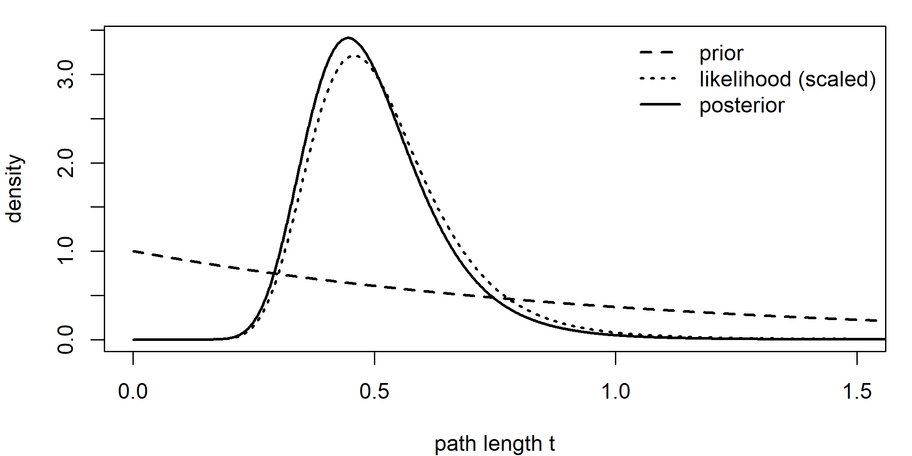
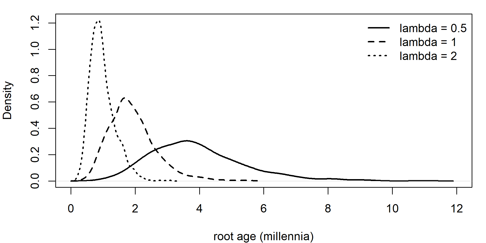
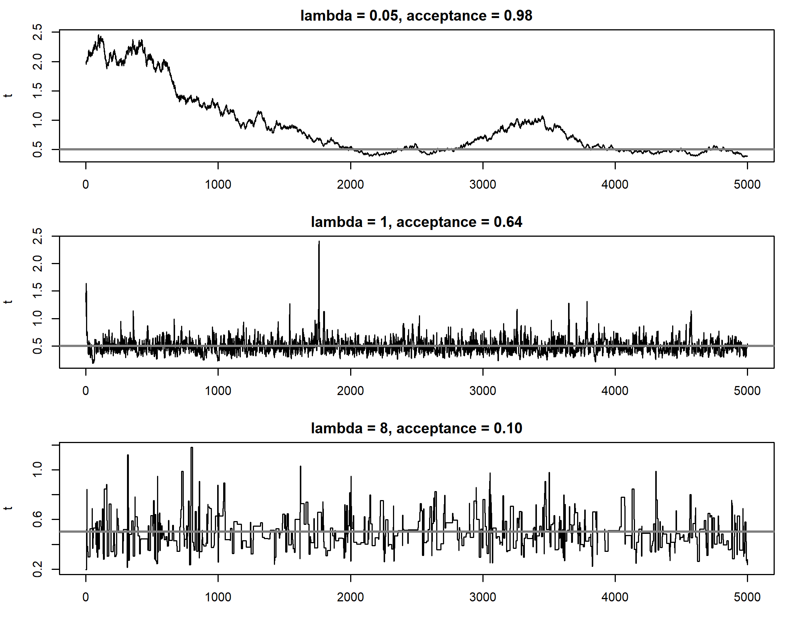
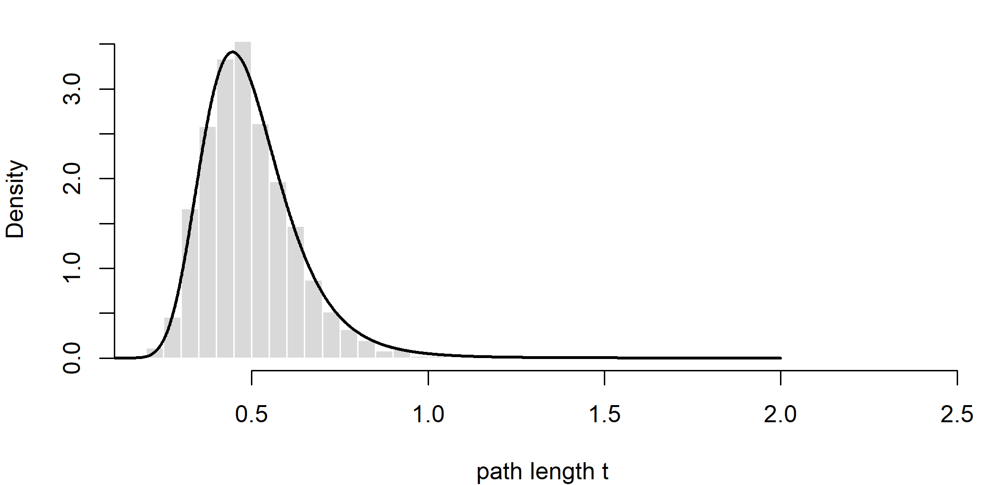
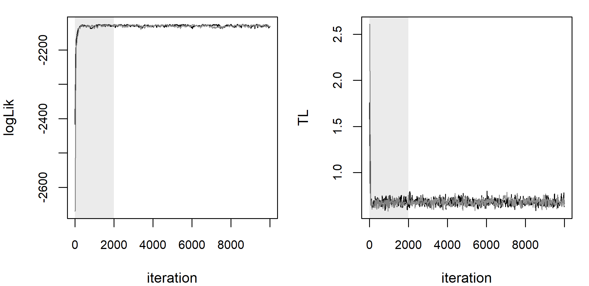
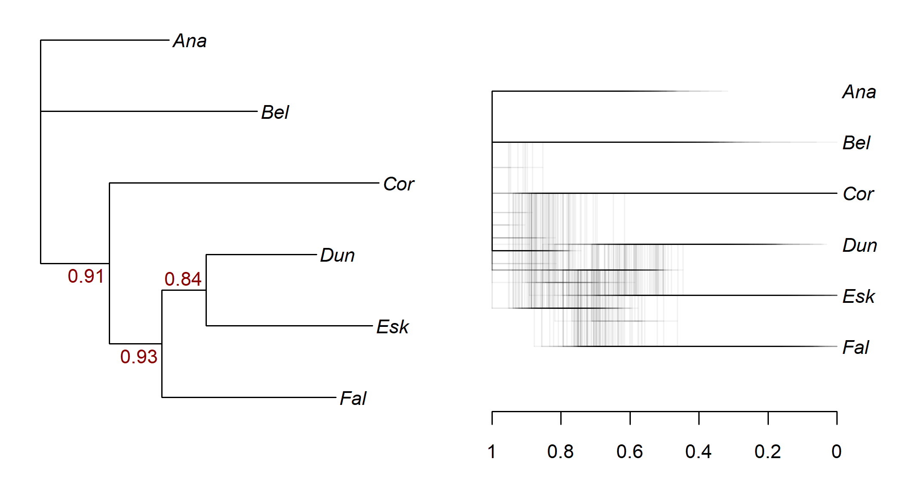
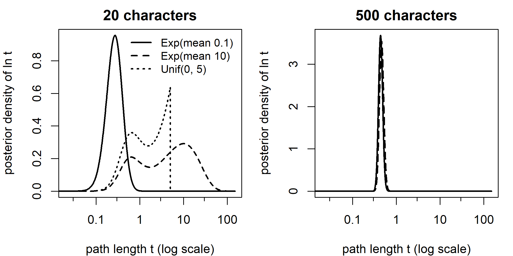
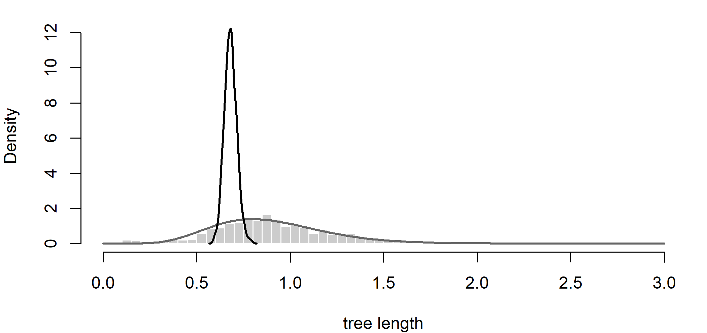
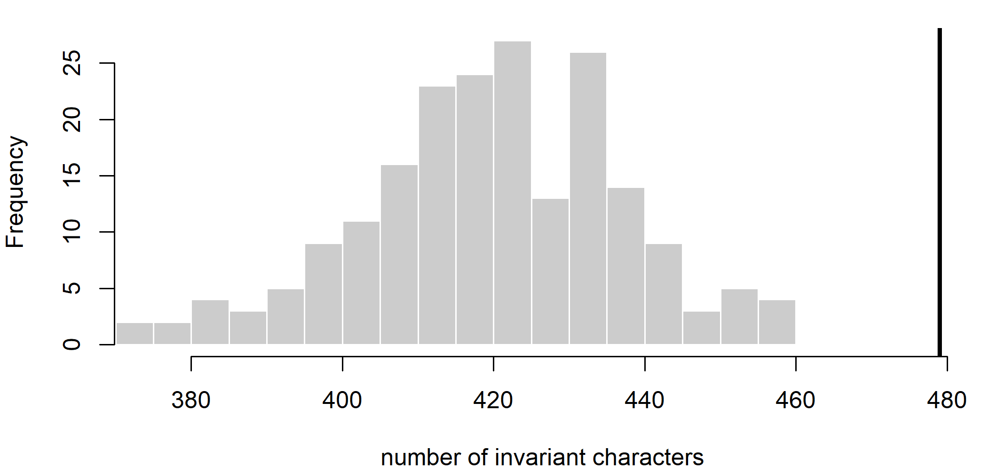

Chapter 6 Bayesian Phylogenetic Inference
Since the Indo-European study of Gray and Atkinson (2003), Bayesian inference has been the dominant framework in linguistic phylogenetics. Nearly every dated language tree discussed in this book, and most of the phylogeographic and comparative analyses built on them, comes from a Bayesian program: MrBayes, BEAST and BEAST 2, TraitLab or RevBayes. These programs answer the questions linguists actually ask (how probable is this subgroup, how old is this proto-language) in the form they want, a probability distribution, but they do so by combining the data with priors and by sampling with Markov chain Monte Carlo, and both steps can fail silently. This chapter explains what the programs do, where the prior enters, how to tell whether a sampler has worked, how models are compared, and how to check whether a model is adequate at all. It also introduces the vocabulary of validation and identifiability that the rest of the book uses (Section 6.10). Sections A.2 and A.12 of the mathematical appendix give background on Bayes’ theorem and on MCMC.
After reading this chapter you should be able to:
- write down Bayes’ theorem for trees, and explain why the marginal likelihood cannot be computed directly but is not needed for sampling;
- explain how topology, branch-length, tree and calibration priors shape a posterior, and check their influence by sampling from the prior;
- describe the Metropolis–Hastings algorithm, tune a proposal, and diagnose convergence and mixing with trace plots, ESS, PSRF and split frequencies;
- summarize a posterior sample of trees with clade probabilities, consensus and MCC trees, and explain why downstream analyses should use the whole sample;
- explain how Bayes factors depend on priors and why the harmonic mean estimator must not be used;
- distinguish implementation validation, parameter recovery, robustness under misspecification, empirical model adequacy and historical interpretation, and classify a given simulation study accordingly;
- design a posterior predictive check for a cognate model.
6.1 Bayes’ theorem for trees
6.1.1 From likelihood to posterior
Maximum likelihood (Chapter 5) treats the tree and parameters as fixed unknowns and asks which values make the data most probable. Bayesian inference treats them as random variables and asks how probable each value is given the data. The link is Bayes’ theorem (Bayes 1763). Writing \(\tau\) for the topology, \(\mathbf{t}\) for the branch lengths (or node ages) and \(\theta\) for the remaining model parameters, \[\begin{equation} f(\tau, \mathbf{t}, \theta \mid D) = \frac{f(D \mid \tau, \mathbf{t}, \theta)\, f(\tau, \mathbf{t}, \theta)}{f(D)}. \tag{6.1} \end{equation}\] The likelihood \(f(D \mid \tau, \mathbf{t}, \theta)\) is exactly the quantity computed by the pruning algorithm. The prior \(f(\tau, \mathbf{t}, \theta)\) expresses what is believed about the tree and parameters before seeing the data. The posterior \(f(\tau, \mathbf{t}, \theta \mid D)\) is the updated belief. The denominator, the marginal likelihood or evidence, \[\begin{equation} f(D) = \sum_{\tau} \int\!\!\int f(D \mid \tau, \mathbf{t}, \theta)\, f(\tau, \mathbf{t}, \theta)\, d\mathbf{t}\, d\theta, \tag{6.2} \end{equation}\] is the average probability of the data over everything the prior allows. It is a constant that makes the posterior integrate to one, and it plays a central role in model comparison (Section 6.7).
Bayesian phylogenetic inference was developed independently by several groups in the second half of the 1990s (Rannala and Yang 1996; Yang and Rannala 1997; Mau et al. 1999; Larget and Simon 1999; Li et al. 2000), and it became widely used after the release of MrBayes (Huelsenbeck and Ronquist 2001; Huelsenbeck et al. 2001).
6.1.2 What the posterior offers
The attraction of the posterior is that it answers the questions linguists actually ask, in the form they want. The posterior probability of a clade (the sum of the posterior probabilities of all trees containing it) is the probability, under the model and prior, that the clade is real: a direct statement of the form “Germanic and Italic form a clade with probability 0.12”. A divergence time comes with a credible interval, an interval that contains the true value with stated posterior probability. And, crucially for downstream work, uncertainty in the tree can be carried forward: a homeland analysis (Chapter 11) or a comparative test (Chapter 13) can be repeated over thousands of trees sampled from the posterior, so that conclusions do not depend on a single best tree.
Even with flat priors, the Bayesian and maximum-likelihood answers need not coincide. Maximum likelihood estimates the tree jointly with the substitution and clock parameters, at the single highest point of the likelihood surface. The posterior probability of a tree instead integrates over these nuisance parameters, so a tree whose likelihood peak is slightly lower but which fits well across a wide range of parameter values can receive the higher posterior probability: in the phrase of Holder and Lewis (2003), a Bayesian analysis measures the volume under the surface rather than its maximum height. With many characters and few parameters the surface is sharply peaked and the distinction is largely academic. With parameter-rich models and the modest datasets typical of linguistics it can matter.
The price is the prior. Every Bayesian result depends on it, and with the modest amounts of data typical of linguistics, some quantities, especially absolute dates, depend on it heavily. Much of this chapter is about how to make that dependence visible. The other qualification is in the words “under the model”: a posterior probability of 0.99 is a statement about the model as much as about history, which is why Section 6.10 separates the questions of whether the computation is right, whether the model fits, and what its parameters mean.
6.1.3 A posterior over three trees
The simplest phylogenetic use of Bayes’ theorem needs no sampling at all. Four languages can be related by only three unrooted topologies, so the sum over topologies in Equation (6.2) has three terms. Take English, German, Italian and Spanish again, six binary cognate characters, the symmetric binary model, and for the moment fix the branch lengths: each language keeps the terminal branch it had in the pruning example of Section 5.4 (English 0.1, German 0.2, Italian 0.1, Spanish 0.3), and the internal branch is 0.2 in all three trees. With a uniform prior of 1/3 on each topology, the posterior is the likelihood times the prior divided by their sum.
cog6 <- rbind(English = c(1, 1, 1, 0, 1, 0),
German = c(1, 1, 0, 1, 0, 0),
Italian = c(0, 0, 1, 0, 0, 1),
Spanish = c(0, 0, 0, 1, 0, 1))
pd6 <- phangorn::phyDat(cog6, type = "USER", levels = c(0, 1))
topos <- c(
"EG|IS" = "((English:0.1,German:0.2):0.2,Italian:0.1,Spanish:0.3);",
"EI|GS" = "((English:0.1,Italian:0.1):0.2,German:0.2,Spanish:0.3);",
"ES|GI" = "((English:0.1,Spanish:0.3):0.2,German:0.2,Italian:0.1);")
loglik3 <- sapply(topos, function(nw)
phangorn::pml(read.tree(text = nw), pd6)$logLik)
log_joint <- loglik3 + log(1/3) # likelihood x prior
log_evidence <- log(sum(exp(log_joint))) # f(D): a sum of three
data.frame(log_likelihood = loglik3, log_prior = log(1/3),
posterior = exp(log_joint - log_evidence))#> log_likelihood log_prior posterior
#> EG|IS -20.26 -1.099 0.86590
#> EI|GS -22.25 -1.099 0.11851
#> ES|GI -24.27 -1.099 0.01559Three characters (columns 1, 2 and 6) group English with German and Italian with Spanish, while two (columns 3 and 4) group English with Italian and German with Spanish; the remaining character is a singleton. The posterior nevertheless gives the first topology a probability near 0.87, not 3/5, because the likelihood weighs each pattern by how easily the model can produce it on each tree, given its branch lengths. Three features of this small calculation carry over to every Bayesian phylogenetic analysis. The marginal likelihood is a prior-weighted average of the likelihoods of the hypotheses, here 6.13^{-10}. Under a uniform prior the posterior odds of two trees equal their likelihood ratio, so the prior on topologies matters only when it is not uniform, or through priors on other parameters that differ between trees. And the posterior probability of a clade is the sum of the posterior probabilities of the trees that contain it; with four languages each clade occurs in just one tree.
The calculation is conditional on the fixed branch lengths, which a real analysis would integrate over as well (Equation (6.2)). And it is possible only because the trees can be listed. With 20 languages there are about \(2.2 \times 10^{20}\) unrooted topologies (Section B.1.1), each with its own branch lengths to integrate over.
6.1.4 A one-parameter example
Before turning to trees, consider the simplest case from Chapter 5: two languages, \(N = 100\) binary characters of which \(k = 30\) differ, and a symmetric binary model, so that the only parameter is the path length \(t\) between the languages. Its likelihood is equation (5.2). Take an exponential prior with mean 1, \(f(t) = e^{-t}\). With a single parameter we can compute the posterior on a grid: evaluate likelihood times prior at many values of \(t\) and normalize so the result integrates to one.
N <- 100; k <- 30
loglik_t <- function(t, N = 100, k = 30) {
p <- 0.5 * (1 - exp(-2 * t))
k * log(0.5 * p) + (N - k) * log(0.5 * (1 - p)) # root frequency 1/2
}
grid <- seq(0.001, 2, length.out = 2000); h <- diff(grid)[1]
prior <- dexp(grid, rate = 1)
lik <- exp(loglik_t(grid) - max(loglik_t(grid)))
post <- prior * lik; post <- post / sum(post * h)
par(mar = c(4, 4, 1, 1))
plot(grid, post, type = "l", lwd = 2, xlab = "path length t",
ylab = "density", xlim = c(0, 1.5))
lines(grid, prior, lty = 2, lwd = 2)
lines(grid, lik / sum(lik * h), lty = 3, lwd = 2)
legend("topright", c("prior", "likelihood (scaled)", "posterior"),
lty = c(2, 3, 1), lwd = 2, bty = "n")
Figure 6.1: Prior (dashed), likelihood (dotted, rescaled) and posterior (solid) for the path length between two languages differing in 30 of 100 binary characters, computed on a grid.
#> posterior_mean MLE
#> 0.5013 0.4581Here the data are informative and the posterior is close to the (rescaled) likelihood; the prior pulls the posterior mean only slightly toward smaller values. Grid evaluation works for one parameter and, with effort, for two or three. A tree with 50 languages has 97 branch lengths, a handful of model parameters and about \(3 \times 10^{74}\) possible topologies. No grid can cover that space, and the evidence (6.2) cannot be computed. We need a way to draw samples from the posterior without knowing its normalizing constant. That is what MCMC provides.
6.2 Priors
A Bayesian phylogenetic model has three kinds of prior: on the topology, on branch lengths or node ages, and on the other parameters. In a dated analysis the first two are combined into a single tree prior, and the branch lengths in units of change are the product of times and rates, with a separate clock prior on rates (Chapter 9).
6.2.1 Priors on topologies and branch lengths for undated trees
For an unrooted, undated tree, the usual topology prior is uniform: all \((2n-5)!!\) labeled topologies are equally probable. Note that a uniform prior on topologies is not uniform on clades: some clades occur in more topologies than others, so a “flat” topology prior implies non-flat prior probabilities for particular groupings. Users can also impose topological constraints, giving zero prior probability to trees that violate a grouping established by the comparative method. Constraints are common in linguistic analyses, for example forcing well-established subgroups such as Germanic or Oceanic to be monophyletic. A constrained clade can of course no longer be “recovered” by the analysis, a point worth remembering when results are compared with traditional classifications.
Branch lengths are usually given independent exponential priors. A seemingly harmless choice can be influential. With \(2n - 3\) branches each given an exponential prior with mean 0.1, the prior on the total tree length is a gamma distribution whose mean grows with the number of languages, and under some conditions this produces posterior tree lengths far too long (Brown et al. 2010; Marshall 2010). Rannala et al. (2012) analyzed this behavior and, with Zhang et al. (2012), proposed compound Dirichlet priors that place a prior on total tree length and divide it among branches with a Dirichlet distribution, which is more robust. MrBayes implements both.
6.2.2 Tree priors for dated trees
When the tree is time-calibrated, so that branch lengths are durations, the prior on topology and node ages together comes from a model of how lineages split, die out and are sampled. These tree priors were developed for species and pathogens; their linguistic interpretation is that a “birth” is the split of one language into two, a “death” is the extinction of a language without descendants, and “sampling” is the selection of languages into the dataset.
The Yule process (Yule 1925) is the simplest: each lineage splits at rate \(\lambda\) and never goes extinct. Starting with two lineages at the root, while there are \(j\) lineages the waiting time to the next split is exponential with rate \(j\lambda\). Multiplying these exponential densities over the history of a tree with \(n\) leaves shows that the prior density of a particular ranked topology with its node times is \(\lambda^{n-2} e^{-\lambda T}\), where \(T\) is the total length of all branches. The density depends only on the number of languages and the total tree length: trees with many long branches are penalized, and the speed of that penalty is set by \(\lambda\).
The birth–death process (Kendall 1948) adds extinction at rate \(\mu\). The tree observed today is the reconstructed tree, from which extinct lineages have been pruned, and its probability density was derived by Nee et al. (1994) and in conditioned forms by Gernhard (2008). If only a fraction \(\rho\) of the living languages is sampled, the density changes again (Stadler 2009). Sampling matters in linguistics: a dataset of 100 Bantu languages samples perhaps a fifth of the family, and treating it as complete would distort the inferred branching times. Birth and death rates are also a first example of the difference between being identifiable and being practically estimable (Section 6.10): with trees of living languages only, extinction is notoriously hard to estimate.
The coalescent (Kingman 1982) describes the genealogy of a sample from a large population looking backward in time, with lineages merging at a rate that depends on population size. Coalescent priors, including flexible demographic versions such as the Bayesian skyline (Drummond et al. 2005), are standard for within-species and pathogen data, and are occasionally used as convenient tree priors in linguistic analyses, although the population-genetic process they describe is a poor match for the splitting of languages.
The fossilized birth–death (FBD) process (Stadler 2010; Heath et al. 2014) adds the sampling of lineages through time, so that dated samples from the past (fossils in biology, ancient languages in linguistics) are part of the tree, either as tips on extinct side branches or as sampled ancestors lying directly on the path to living descendants (Gavryushkina et al. 2014). For language data with written records, this is attractive: Latin can be placed as an ancestor (or near-ancestor) of the Romance languages, and Classical Greek, Sanskrit or Old Chinese can be included at their attested dates rather than used only as calibrations. Heggarty et al. (2023) used a sampled-ancestor tree prior for Indo-European. Chapter 10 discusses these models and the controversy over ancestry constraints (Chang et al. 2015).
The code below simulates trees of ten languages under Yule processes with three different birth rates and shows the prior distribution of the root age that each implies. The root age is a quantity that linguists care about, yet even a seemingly uninformative tree prior has a strong opinion about it.
library(phytools)
set.seed(10)
root_ages <- lapply(c(0.5, 1, 2), function(b) {
trs <- pbtree(b = b, n = 10, nsim = 1000)
sapply(trs, function(tr) max(node.depth.edgelength(tr)))
})
par(mar = c(4, 4, 1, 1))
ymax <- max(sapply(root_ages, function(r) max(density(r, from = 0)$y)))
plot(density(root_ages[[1]], from = 0), lwd = 2, main = "", xlim = c(0, 12),
ylim = c(0, ymax), xlab = "root age (millennia)")
lines(density(root_ages[[2]], from = 0), lwd = 2, lty = 2)
lines(density(root_ages[[3]], from = 0), lwd = 2, lty = 3)
legend("topright", c("lambda = 0.5", "lambda = 1", "lambda = 2"),
lty = 1:3, lwd = 2, bty = "n")
Figure 6.2: Prior distributions of the root age of a ten-language tree under Yule processes with three birth rates (splits per lineage per millennium), from 1,000 simulated trees each.
#> [1] 3.6964 1.8198 0.90696.2.3 Calibrations and their interaction with the tree prior
In a dated analysis, external information about the ages of some nodes enters as calibration priors: for instance, a prior stating that the common ancestor of the Romance languages is between about 1,500 and 2,000 years old, based on the history of Latin. These are combined with the tree prior, and the combination is not simple. The joint prior on node ages is not the product of the tree prior and the calibration densities, because both constrain the same node ages, and the effective prior on a calibrated node can differ substantially from the calibration density the user specified (Heled and Drummond 2012). Heled and Drummond proposed calibrated tree priors that correct for this. The practical lesson, discussed in detail in Chapter 10, is to run the analysis without data (sampling from the prior) and inspect the effective priors on calibrated and uncalibrated nodes.
6.2.4 Priors on model parameters
Substitution and clock parameters also need priors: Dirichlet distributions for state frequencies, exponential or gamma distributions for rates and for the gamma shape parameter of rate variation, lognormal or exponential distributions for the clock rate. Defaults in software are not neutral. A default exponential prior with mean 1 on a clock rate measured in changes per character per year, for example, places almost all its mass on absurdly high rates for lexical data. Every prior should be set with the units of the analysis in mind, and checked. A prior should not be derived from an analysis of the same dataset, since the data would then be counted twice, once in the prior and once in the likelihood (Barido-Sottani et al. 2024). A prior also limits what the sampler can explore. Values outside its support are never proposed, so a hard-bounded uniform prior can exclude reasonable values that a long-tailed lognormal or exponential prior would merely discount. An unbounded uniform prior, such as Uniform\((0, \infty)\) on a clock rate, is improper: it puts most of its weight on implausibly high values and leaves the marginal likelihood undefined (Section 6.7). When checking a prior, the range between its 5 and 95 percent quantiles is usually more informative than the shape of its density curve.
There is no such thing as an uninformative prior on a tree. A uniform prior on topologies is informative about clades; independent exponential priors on branch lengths are informative about tree length; a Yule or birth–death prior is informative about the root age; and combining calibrations with a tree prior can produce effective priors very different from the ones specified. Always run the analysis once with the data removed (BEAST: “sample from prior”; MrBayes: mcmc data=no; RevBayes: by omitting the clamped data) and compare the prior and posterior of every quantity you report.
6.3 Markov chain Monte Carlo
6.3.1 The idea
MCMC constructs a Markov chain, a random walk through the space of trees and parameters, whose long-run distribution is the posterior. If the chain is run long enough, the fraction of time it spends in any region is proportional to that region’s posterior probability, and samples taken from it can be used like samples from the posterior: the proportion of sampled trees containing a clade estimates its posterior probability, and the 2.5 and 97.5 percentiles of the sampled root ages estimate a 95 percent credible interval.
6.3.2 The Metropolis–Hastings algorithm
The most important MCMC algorithm is due to Metropolis et al. (1953) and Hastings (1970). Writing \(x\) for the current state (tree, branch lengths and parameters) and \(\pi(x) \propto f(D \mid x) f(x)\) for the unnormalized posterior, one iteration is:
- Propose a new state \(x'\) by drawing from a proposal distribution \(q(x' \mid x)\).
- Compute the acceptance probability \[\begin{equation} \alpha(x, x') = \min\left(1,\; \underbrace{\frac{f(D \mid x')}{f(D \mid x)}}_{\text{likelihood ratio}} \times \underbrace{\frac{f(x')}{f(x)}}_{\text{prior ratio}} \times \underbrace{\frac{q(x \mid x')}{q(x' \mid x)}}_{\text{Hastings ratio}}\right). \tag{6.3} \end{equation}\]
- With probability \(\alpha\), move to \(x'\); otherwise stay at \(x\) (and record \(x\) again).
The marginal likelihood \(f(D)\) cancels from the ratio, which is why MCMC works without it. Moves that increase the posterior are always accepted; moves that decrease it are accepted with probability equal to the ratio, which lets the chain explore the whole distribution rather than climb to a single peak. The Hastings ratio corrects for asymmetric proposals, in which moving from \(x\) to \(x'\) is more likely than moving back.
Why does this work? The acceptance rule is constructed so that, at equilibrium, the chain moves from \(x\) to \(x'\) exactly as often as from \(x'\) to \(x\) (the detailed balance condition, the same condition as for reversible CTMCs in Chapter 5). A chain with this property leaves the posterior unchanged once it has reached it, and if it can reach every state from every other, it converges to the posterior from any starting point.
6.3.3 Proposals and their Hastings ratios
The art of MCMC lies in the proposals. For a positive parameter such as a branch length, a common choice is the multiplier (or scale) proposal: draw \(u \sim \mathrm{Uniform}(0,1)\), set \(m = e^{\lambda(u - 1/2)}\), and propose \(t' = mt\), where \(\lambda\) is a tuning parameter. Because the proposal is uniform on the log scale rather than on \(t\) itself, it is asymmetric, and its Hastings ratio is \(m\). Scaling all \(B\) branch lengths of the tree by the same \(m\) (a tree scaler) has Hastings ratio \(m^B\). Forgetting such terms is the classic bug in hand-written samplers: the chain still runs and looks healthy, but it samples the wrong distribution.
For topologies, proposals include the nearest-neighbor interchange (NNI) of Chapter 5 and its stochastic variants, subtree pruning and regrafting (SPR), the LOCAL move of Larget and Simon (1999), which perturbs a path of three branches, and, for time trees, the narrow and wide exchange, subtree slide and Wilson–Balding moves of BEAST and MrBayes. Lakner et al. (2008) compared the efficiency of tree proposals and found that some popular moves rarely got accepted on large trees, which led to improved and guided proposals (Höhna and Drummond 2012). Because the efficiency of a topology move cannot be adjusted through a single step size, it is usual to combine moves that make small rearrangements (NNI) with moves that make large ones (SPR), and to give topology moves much higher weights than moves on single numerical parameters (Barido-Sottani et al. 2024).
The tuning parameter matters. A proposal that takes tiny steps is almost always accepted but moves slowly; one that takes huge steps is almost always rejected. For random-walk proposals on a single continuous parameter, an acceptance rate somewhere around 0.2 to 0.5 is a common target, guided by theoretical results on optimal scaling (Roberts et al. 1997). BEAST and MrBayes tune their proposals automatically during the run. Automatic tuning has its own pitfall: tuning throughout the run can shrink the step sizes around the chain’s current position until it is trapped near a local optimum, so tuning mainly during the burn-in is usually preferable (Barido-Sottani et al. 2024); RevBayes runs it as a separate tuning phase (Section 6.5). Iteration counts are not comparable across programs either. One “generation” of RevBayes by default attempts as many moves as the sum of the move weights, whereas other programs may attempt a single move per iteration, so chain lengths should be compared through effective sample sizes, not through numbers of iterations (Höhna et al. 2017; Barido-Sottani et al. 2024).
6.3.4 A Metropolis–Hastings sampler in R
The following function implements a Metropolis–Hastings sampler for the two-language path length, with the multiplier proposal and its Hastings ratio. The argument beta raises the likelihood to a power, which is needed for marginal likelihood estimation (Section B.4.4); with beta = 1 the sampler targets the ordinary posterior.
mh_t <- function(niter, lambda = 1, t_start = 1, beta = 1, prior_rate = 1,
N = 100, k = 30) {
t <- t_start
lp <- beta * loglik_t(t, N, k) + dexp(t, prior_rate, log = TRUE)
out <- numeric(niter); accepted <- 0
for (i in seq_len(niter)) {
m <- exp(lambda * (runif(1) - 0.5)) # multiplier proposal
t_new <- t * m
lp_new <- beta * loglik_t(t_new, N, k) +
dexp(t_new, prior_rate, log = TRUE)
if (log(runif(1)) < lp_new - lp + log(m)) { # log(m): Hastings ratio
t <- t_new; lp <- lp_new; accepted <- accepted + 1
}
out[i] <- t
}
structure(out, acceptance = accepted / niter)
}We run three chains from the same poor starting value (\(t = 2\)) with tuning parameters that are too small, about right, and too large.
library(coda)
set.seed(1)
chains <- lapply(c(0.05, 1, 8),
function(l) mh_t(5000, lambda = l, t_start = 2))
post_mean <- sum(grid * post * h)
par(mfrow = c(3, 1), mar = c(3, 4, 2, 1))
for (j in 1:3) {
plot(chains[[j]], type = "l", ylab = "t", xlab = "",
main = sprintf("lambda = %s, acceptance = %.2f",
c(0.05, 1, 8)[j], attr(chains[[j]], "acceptance")))
abline(h = post_mean, col = "grey50", lwd = 2)
}
Figure 6.3: Trace plots of three Metropolis-Hastings chains for the two-language path length, started at t = 2, with tuning parameters that are too small (top), reasonable (middle) and too large (bottom). The gray line marks the posterior mean.
The first chain creeps slowly from its starting value and is still far from the bulk of the posterior after hundreds of iterations; its consecutive samples are almost identical. The third chain jumps well when it moves, but it rarely moves, producing long flat stretches. The middle chain mixes well. These differences show up in the effective sample size (ESS), the number of independent samples that would carry the same information as the autocorrelated chain (Section 6.5).
burnin <- 1:500
data.frame(lambda = c(0.05, 1, 8),
acceptance = sapply(chains, attr, "acceptance"),
ESS = sapply(chains, function(x) effectiveSize(mcmc(x[-burnin]))),
mean = sapply(chains, function(x) mean(x[-burnin])))#> lambda acceptance ESS mean
#> 1 0.05 0.9778 4.843 0.7414
#> 2 1.00 0.6372 709.190 0.4955
#> 3 8.00 0.0984 331.314 0.4998Finally we check the well-tuned chain against the exact posterior computed on the grid. Agreement with an exact answer obtained by a different route is the simplest form of implementation validation (Section 6.10).
good <- chains[[2]][-burnin]
par(mar = c(4, 4, 1, 1))
hist(good, breaks = 40, freq = FALSE, main = "", xlab = "path length t",
col = "grey85", border = "white")
lines(grid, post, lwd = 2)
Figure 6.4: Histogram of 4,500 post-burn-in samples from the well-tuned chain, with the exact posterior density from the grid calculation (line).
#> lower upper
#> var1 0.2829 0.7653
#> attr(,"Probability")
#> [1] 0.956.3.5 Metropolis-coupled MCMC
Tree space is rugged: the posterior can have several peaks separated by valleys of low probability, and a chain that takes small steps can stay on one peak indefinitely. Metropolis-coupled MCMC (MC\(^3\)) (Geyer 1991) runs several chains in parallel. One “cold” chain samples the posterior; the others are “heated”, sampling from a flattened version of it, with the posterior raised to a power \(\beta_i < 1\) (MrBayes uses \(\beta_i = 1/(1 + (i-1)\Delta T)\) for chain \(i\) and temperature increment \(\Delta T\)). Heated chains cross valleys easily. Periodically, two chains propose to swap states, with an acceptance probability that preserves the correct target distribution for each, so that the cold chain can inherit a state from a different peak. MrBayes runs four chains (one cold, three heated) by default, and parallel implementations spread them across processors (Altekar et al. 2004). BEAST 2 offers a similar scheme through its coupled MCMC package.
6.3.6 Beyond Metropolis–Hastings
Several other samplers are used in phylogenetics. Gibbs sampling (Geman and Geman 1984) updates one parameter at a time from its full conditional distribution, which is possible when that distribution has a standard form. Updating parameters one at a time, whether by Gibbs or by Metropolis steps, mixes slowly when parameters are strongly correlated, because the chain must creep along a narrow ridge of the posterior; updating correlated parameters jointly (“blocking”) or with proposals shaped to the correlation helps (Ravenzwaaij et al. 2018). In dated trees the clearest case is rate against time: node ages and the mean clock rate trade off almost exactly, which is why BEAST 2 provides an up–down move that scales node ages up while scaling the clock rate down (Barido-Sottani et al. 2024). Reversible-jump MCMC (Green 1995) moves between models with different numbers of parameters, so that model uncertainty is integrated over rather than selected; it underlies the averaging over substitution models in bModelTest (Bouckaert and Drummond 2017) and the reversible-jump analyses of correlated evolution in BayesTraits (Pagel and Meade 2006). Hamiltonian Monte Carlo uses gradients of the posterior to make long, well-directed moves; efficient gradients of phylogenetic likelihoods with respect to branch lengths and rates (Ji et al. 2020) have made it practical for some parameters in BEAST X.
6.4 A small Bayesian tree analysis
To see all the pieces working together on trees, we use a complete, if small, Bayesian phylogenetic sampler. The data are binary cognate characters simulated for six languages on a known tree, with gamma-distributed rates across characters. The model we fit is deliberately simpler than the one that generated the data: a symmetric binary model without rate variation (Section 6.9 asks whether this misspecification can be detected). The priors are uniform on unrooted topologies and independent exponential with mean 0.1 on each branch length. The proposals are a single-branch multiplier (probability 0.5), an NNI on a random internal branch (0.3), and a tree scaler (0.2), each with the Hastings ratio derived in Section B.4.2.
The sampler is about a hundred lines of R, kept in the file R/toy-tree-sampler.R of the book’s source. It is listed and explained in Section B.4.3; here we load it and look at its output.
library(phangorn)
source("R/toy-tree-sampler.R") # sim_sym(), make_loglik(), run_mcmc(), ...
set.seed(7)
langs6 <- c("Ana", "Bel", "Cor", "Dun", "Esk", "Fal")
true6 <- read.tree(text = paste0("((Ana:0.10,Bel:0.15):0.04,Cor:0.25,",
"((Dun:0.08,Esk:0.12):0.015,Fal:0.20):0.03);"))
X6 <- sim_sym(true6, 800, rates = rgamma(800, shape = 0.5, rate = 0.5))
c(characters = ncol(X6),
distinct_patterns = length(unique(apply(X6, 2, paste, collapse = ""))))#> characters distinct_patterns
#> 800 62The likelihood function compresses identical character patterns and runs the pruning algorithm recursively. Before using it, we check it against phangorn, an independent implementation.
loglik_tree <- make_loglik(X6)
c(toy = loglik_tree(true6),
phangorn = pml(true6, phyDat(X6, type = "USER", levels = c(0, 1)))$logLik)#> toy phangorn
#> -2158 -2158We run two independent chains of 10,000 iterations from different random starting trees, sampling every tenth iteration.
set.seed(101); run1 <- run_mcmc(10000, random_start(langs6), loglik_tree)
set.seed(202); run2 <- run_mcmc(10000, random_start(langs6), loglik_tree)
round(rbind(chain1 = run1$acceptance, chain2 = run2$acceptance), 3)#> branch nni scaler
#> chain1 0.531 0.108 0.291
#> chain2 0.551 0.120 0.313The branch-length moves are accepted about half the time, the NNI moves much less often. Low acceptance of topology moves is typical: most neighbors of a good tree are much worse. In large analyses this is the main reason runs must be long.
6.5 Convergence and mixing
An MCMC sample is only useful if the chain has converged to the posterior and has explored it thoroughly. Neither can be proven, but several diagnostics can reveal failures (Nascimento et al. 2017).
Burn-in. The early part of a chain reflects its starting point, not the posterior. It is discarded; 10 to 25 percent of the run is a common choice, but the right amount is whatever the trace plots show. The burn-in is therefore chosen after sampling, by inspecting the chains, and it pays to be conservative: discarding too much costs only some precision, provided enough samples remain, whereas keeping samples from before convergence biases every summary (Ravenzwaaij et al. 2018). Starting independent chains from dispersed points, for example from different draws from the prior, makes their eventual agreement more informative.
Trace plots of the log-likelihood, tree length and key parameters against iteration should look like stationary “fuzzy caterpillars”, without trends or long excursions, and independent chains should overlap. Figure 6.5 shows them for our two chains.
par(mfrow = c(1, 2), mar = c(4, 4, 1, 1), cex.axis = 0.85)
for (v in c("logLik", "TL")) {
rng <- range(c(run1$trace[[v]], run2$trace[[v]]))
plot(run1$trace$iter, run1$trace[[v]], type = "l", ylim = rng,
xlab = "iteration", ylab = v)
lines(run2$trace$iter, run2$trace[[v]], col = "grey55")
rect(0, rng[1] - 1e3, 2000, rng[2] + 1e3, col = rgb(0, 0, 0, 0.08),
border = NA)
}
Figure 6.5: Trace plots of the log-likelihood (left) and tree length (right) for two independent chains of the toy tree sampler (black and gray). The first 20 percent of samples, shaded, are discarded as burn-in.
Effective sample size. Successive MCMC samples are autocorrelated. The ESS estimates how many independent samples the chain is worth, using the autocorrelation function. Tracer (Rambaut et al. 2018), the standard tool for inspecting BEAST and MrBayes output, flags parameters with ESS below 200; the R package coda (Plummer et al. 2006) computes the same quantities. The threshold of 200 is a convention rather than a theorem (Barido-Sottani et al. 2024). Fabreti and Höhna (2022) instead derive a threshold from the precision required: under approximate normality, an ESS of 625 makes the Monte Carlo standard error of a posterior mean about 1 percent of the width of its 95 percent interval, against about 1.8 percent for an ESS of 200. Higher thresholds are worth their cost for the quantities on which conclusions rest, such as a root age.
Potential scale reduction factor. With several chains, the PSRF of Gelman and Rubin (1992) compares the variance within chains with the variance between them. If the chains have converged to the same distribution, the two agree and PSRF is close to 1; values much above 1 (say, above 1.01 to 1.1, depending on the standard adopted) indicate that the chains have not yet mixed.
Topological convergence. Continuous summaries can look perfect while the chains disagree about the tree. MrBayes reports the average standard deviation of split frequencies (ASDSF): for every split that appears in the samples, compute its frequency in each chain, take the standard deviation across chains, and average. As chains converge on the same posterior distribution of trees, the ASDSF goes to zero; values below about 0.01 are often taken as a sign of good convergence, and values up to about 0.05 as acceptable for exploratory work. Graphical tools such as AWTY (Nylander et al. 2008) and RWTY (Warren et al. 2017) plot split frequencies over time and across runs, and Lanfear et al. (2016) proposed ways to estimate the ESS of the topology itself. Whidden and Matsen (2015) showed that tree-space exploration can fail in subtle ways, with chains trapped among sets of trees separated by low-probability bridges. The R package convenience (Fabreti and Höhna 2022) computes an ESS for every split, treating its presence or absence in the sampled trees as a binary trace, and uses Kolmogorov–Smirnov tests to ask whether independent runs have sampled the same distribution.
Monte Carlo error. An ESS translates directly into precision. The Monte Carlo standard error of a posterior mean is roughly the posterior standard deviation divided by the square root of the ESS, and Tracer reports it next to each mean; tail quantities, such as the bounds of a 95 percent HPD interval for a root age, are estimated much less precisely than the mean from the same samples. It helps to ask three separate questions of every reported number: whether its Monte Carlo error is small relative to the precision with which it is reported, whether a longer run would change it by more than that, and whether independent runs from dispersed starting points reproduce it. A root age reported to the nearest century from a chain whose ESS for the root age is 150 is unlikely to pass the first test.
Tuning is not burn-in. Programs adapt the step sizes of their proposals during an initial phase, aiming at acceptance rates of the kind discussed in Section 6.3. In RevBayes, mymcmc.burnin(generations = 1000, tuningInterval = 100) runs such a preliminary, tuning-only chain whose samples are not written to the output files; it is not an instruction to discard part of the main run, whose early samples must still be discarded as burn-in when the output is summarized (Höhna et al. 2017). The weight of each move sets how often, on average, it is attempted per iteration, and giving one parameter several scale moves with small and large tuning values can help mixing; mymcmc.operatorSummary() reports, after the run, how often each move was tried and accepted. Analyses that run for days should write checkpoints (the checkpointInterval and checkpointFile arguments of run(), and initializeFromCheckpoint() to resume), so that a time limit on a computing cluster does not end the run for good.
The code below computes these diagnostics for our two chains.
burn <- 1:200 # first 20% of 1000 samples
post1 <- run1$trace[-burn, ]; post2 <- run2$trace[-burn, ]
mc <- mcmc.list(mcmc(as.matrix(post1[, c("logLik", "TL")])),
mcmc(as.matrix(post2[, c("logLik", "TL")])))
effectiveSize(mc) # ESS, summed over chains#> logLik TL
#> 112.9 997.1#> Point est. Upper C.I.
#> logLik 1.030 1.135
#> TL 1.003 1.018split_freqs <- function(trees) {
table(unlist(lapply(trees, split_keys))) / length(trees)
}
f1 <- split_freqs(run1$trees[-burn]); f2 <- split_freqs(run2$trees[-burn])
all_splits <- union(names(f1), names(f2))
sf <- cbind(chain1 = as.numeric(f1[all_splits]),
chain2 = as.numeric(f2[all_splits]))
sf[is.na(sf)] <- 0; rownames(sf) <- all_splits
c(ASDSF = mean(apply(sf, 1, sd)))#> ASDSF
#> 0.01273The two chains agree well on the tree length, but the diagnostics for the log-likelihood are less comfortable: its ESS is modest, its PSRF is a little above 1, and the ASDSF (0.013) is around the conventional threshold of 0.01. By the usual standards these chains are close to convergence but should be run longer before their results are reported. The samples are strongly autocorrelated because we record every tenth iteration of a chain that changes one branch or one NNI at a time. Real analyses run for millions or hundreds of millions of iterations for exactly this reason. Note what convergence diagnostics can and cannot establish: that the sampler has explored the posterior defined by the model, which is a matter of implementation, not that the model is adequate.
When chains do not converge. The cause may lie in the sampler, in the priors or in the fit between model and data, and these are best examined in that order (Barido-Sottani et al. 2024). Every estimated parameter needs at least one move, since a parameter without one never leaves its starting value; moves on poorly mixing parameters can be given more weight; and a sketch of the model’s graph (Section 6.11) shows which parameters depend on which. A chain that misbehaves even without data points to the set-up, such as conflicting calibrations or interacting priors; one that behaves under the prior but not with the data points to the data or the model. Running data partitions separately shows whether they support incompatible trees, and parameters whose traces merely reproduce their priors suggest that the data have been over-partitioned. A strict clock, or an informative prior on a weakly identified parameter, may converge where a relaxed clock wanders. An overly simple analysis that runs usually teaches more than an elaborate one that never converges.
6.6 Summarizing the posterior
6.6.1 Topologies and clades
The posterior sample is a set of thousands of trees. The simplest summaries are the posterior probabilities of topologies (when the posterior is concentrated enough for individual topologies to recur) and of clades (or, for unrooted trees, splits).
topo <- table(c(post1$topology, post2$topology))
head(sort(topo, decreasing = TRUE) / sum(topo), 4) # top topologies#>
#> Cor+Dun+Esk+Fal | Dun+Esk | Dun+Esk+Fal
#> 0.73125
#> Cor+Dun+Esk+Fal | Dun+Esk+Fal | Esk+Fal
#> 0.09875
#> Cor+Dun+Esk+Fal | Cor+Fal | Dun+Esk
#> 0.06062
#> Bel+Cor | Dun+Esk | Dun+Esk+Fal
#> 0.02937#> [1] "Cor+Dun+Esk+Fal | Dun+Esk | Dun+Esk+Fal"#> Dun+Esk+Fal Cor+Dun+Esk+Fal Dun+Esk Esk+Fal
#> 0.926 0.906 0.844 0.143
#> Cor+Fal Bel+Dun+Esk+Fal Bel+Cor Cor+Esk+Fal
#> 0.073 0.048 0.046 0.013
#> Cor+Dun+Esk Dun+Fal
#> 0.001 0.001The true topology is the most probable one, with a posterior probability of about 0.73, and its three splits have the highest split probabilities. But the internal branches of the true tree are short, and the posterior is genuinely uncertain: in particular, the sister of Esk is sometimes Fal rather than Dun. With 800 characters, a posterior probability of around 0.85 for a true clade is what short branches look like. Because the fitted model ignores the rate variation with which the data were generated, this is a small robustness result rather than a pure parameter-recovery one: the topology survives this particular misspecification, while, as we shall see, the tree length does not.
A single tree is usually wanted for display. The options are:
- The majority-rule consensus tree contains every clade with posterior probability above one half (Section 2.5). It is the default in MrBayes, and under a loss function that penalizes wrongly included and wrongly omitted clades it is the optimal point estimate of the tree (Holder et al. 2008). Its branch lengths are averages over the trees containing each clade, and it may not be identical to any sampled tree.
- The maximum a posteriori (MAP) tree is the most frequently sampled topology. It is meaningful only when topologies recur often, which is rare for large trees.
- The maximum clade credibility (MCC) tree is the sampled tree that maximizes the product of the posterior probabilities of its clades. It is the default in BEAST’s TreeAnnotator and is the tree drawn in most published linguistic analyses. Its node heights are commonly mean or median clade heights, which can mislead (Heled and Bouckaert 2013); Section 2.5 describes the alternatives, such as common-ancestor heights, now available in TreeAnnotator.
- Agreement subtrees (Cranston and Rannala 2007) summarize the posterior by subsets of languages whose relationships recur frequently across the sample, each with a fully resolved subtree. They make visible which languages are responsible for the uncertainty, a useful complement when one or two poorly attested languages wander across the tree.
Node ages are reported with 95 percent highest posterior density (HPD) intervals, the shortest intervals containing 95 percent of the sampled values. Visual summaries that overlay the whole posterior sample, such as DensiTree (Bouckaert 2010), are often more honest than any single tree, especially when the posterior is genuinely uncertain about deep relationships.
post_trees <- c(run1$trees[-burn], run2$trees[-burn])
post_trees <- lapply(post_trees,
function(t) root(t, "Ana", resolve.root = TRUE))
class(post_trees) <- "multiPhylo"
mcc <- maxCladeCred(post_trees)
par(mfrow = c(1, 2), mar = c(3, 1, 1, 1))
# clade probabilities as computed by plotBS(), written on each stem branch
# on the side away from the parent's vertical line
pp_sup <- plotBS(mcc, post_trees, type = "none", digits = 2)$node.label
plot(mcc, cex = 0.9, label.offset = 0.01 * max(node.depth.edgelength(mcc)))
lp <- get("last_plot.phylo", envir = .PlotPhyloEnv)
nn <- Ntip(mcc) + seq_len(Nnode(mcc))
pa <- mcc$edge[match(nn, mcc$edge[, 2]), 1]
for (i in which(!is.na(pa) & pp_sup > 0)) { # root unlabelled, as plotBS()
a <- if (lp$yy[nn[i]] >= lp$yy[pa[i]]) c(1.1, -0.35) else c(1.1, 1.35)
nodelabels(pp_sup[i], nn[i], frame = "none", adj = a, cex = 0.9,
col = "darkred")
}
set.seed(3)
par(xpd = NA) # tip labels may run into the right margin rather than be clipped
densiTree(post_trees[sample(length(post_trees), 100)], alpha = 0.05,
consensus = mcc, type = "phylogram", scaleX = TRUE, cex = 0.9,
label.offset = 0.015)
Figure 6.6: Summary of the toy posterior. Left: maximum clade credibility tree (rooted on Ana for display) with clade posterior probabilities. Right: a sample of 100 posterior trees drawn on top of each other, in the style of DensiTree.
A summary tree is a picture, not an input. When the posterior is used for a further question, such as reconstructing an ancestral state, locating a homeland or testing a correlation between features, conditioning on one MCC tree treats its topology and branch lengths as known, which can distort the downstream inference even when the summary topology looks entirely plausible (Section 2.5), above all when the result depends precisely on the part of the tree that is uncertain. The remedy is to repeat the downstream analysis over a sample of a few hundred to a few thousand posterior trees and report the distribution of results (Chapters 11, 12, 13 and 17).
6.6.2 Posterior probabilities and bootstrap values
Clade posterior probabilities and bootstrap percentages answer different questions and are not on the same scale. Simulation studies found that posterior probabilities are typically higher than bootstrap values for the same clades (Alfaro et al. 2003), and that when the model is misspecified they can be overconfident (Suzuki et al. 2002). When the true tree contains a very short internal branch, posterior probabilities can strongly favor one of the three resolutions even though the data contain essentially no information about it, the so-called star-tree paradox (Lewis et al. 2005; Yang and Rannala 2005). Linguistic datasets, with their short internal branches near rapid expansions (Chapter 10), are particularly exposed to this. A posterior probability of 0.95 for a deep clade in a family that expanded rapidly deserves scrutiny, not celebration.
6.7 Marginal likelihoods and Bayes factors
6.7.1 Bayes factors
To compare two models \(M_0\) and \(M_1\) (say, a strict versus a relaxed clock, or a binary model versus a stochastic Dollo model), the Bayesian approach uses their marginal likelihoods, equation (6.2). The Bayes factor is their ratio, \[\begin{equation} \mathrm{BF}_{10} = \frac{f(D \mid M_1)}{f(D \mid M_0)}, \tag{6.4} \end{equation}\] which is the factor by which the data change the prior odds of \(M_1\) against \(M_0\) (Kass and Raftery 1995). Kass and Raftery suggested interpreting \(2 \ln \mathrm{BF}\) as follows: 0 to 2, barely worth mentioning; 2 to 6, positive evidence; 6 to 10, strong; above 10, very strong. Because the marginal likelihood averages the likelihood over the prior, it automatically penalizes models with many parameters spread over regions of low likelihood; it also makes Bayes factors sensitive to the prior, in a way that posterior distributions of parameters often are not. Doubling the width of a vague prior on a parameter that the data determine well barely changes its posterior but halves that model’s marginal likelihood.
The marginal likelihood can be read as a prediction made before the data were seen: the probability that the model, with its parameters drawn from their prior, assigned to the data actually observed. A Bayes factor is then a ratio of predictive successes. It measures evidence relative to a stated alternative, and the prior is part of each model’s prediction rather than a separable nuisance (Morey et al. 2016). Verbal scales are rough conventions. The older scale of Jeffreys, as tabulated in the RevBayes documentation (Höhna et al. 2017), is stated for the Bayes factor itself and calls 3.2 to 10 “substantial”, 10 to 100 “strong” and above 100 “decisive” (that is, \(\ln \mathrm{BF}\) above 1.16, 2.3 and 4.6); some linguistic studies report \(\ln \mathrm{BF}\) on this scale (e.g. Goldstein 2022a). Neither scale was calibrated on phylogenetic problems, so before comparing reported values check whether a log Bayes factor is natural or base-10 and whether it has been doubled.
Our one-parameter model is small enough to compute the marginal likelihood exactly by numerical integration, which shows this sensitivity directly. We compare three exponential priors on \(t\), with means 1, 10 and 100.
ll_max <- loglik_t(-0.5 * log(1 - 2 * k / N))
exact_logZ <- function(prior_rate) {
f <- function(t) exp(loglik_t(t) - ll_max) * dexp(t, prior_rate)
log(integrate(f, 0, Inf, rel.tol = 1e-10)$value) + ll_max
}
posterior_mean_t <- function(prior_rate) {
# integrate over the whole of (0, Inf), as for the marginal likelihood
f <- function(t) exp(loglik_t(t) - ll_max) * dexp(t, prior_rate)
integrate(function(t) t * f(t), 0, Inf, rel.tol = 1e-10)$value /
integrate(f, 0, Inf, rel.tol = 1e-10)$value
}
rates <- c(1, 0.1, 0.01)
logZ <- sapply(rates, exact_logZ)
data.frame(prior_mean = 1 / rates,
posterior_mean = sapply(rates, posterior_mean_t),
log_marginal_likelihood = logZ,
log_BF_vs_mean_1 = logZ - logZ[1])#> prior_mean posterior_mean log_marginal_likelihood log_BF_vs_mean_1
#> 1 1 0.5019 -132.1 0.000
#> 2 10 0.6060 -133.9 -1.835
#> 3 100 8.4278 -136.1 -4.017Under the two more informative priors the posterior mean of \(t\) barely moves (about 0.50 and 0.61), but under the prior with mean 100 it jumps to about 8.4. The reason is that with 100 characters the likelihood does not fall to zero at large distances: once the two languages are saturated it levels off about eight log units below its maximum, so a sufficiently diffuse prior leaves a long tail of posterior mass (about 8 percent beyond \(t = 2\)) at implausibly large distances, and that tail dominates the mean. The posterior mode and the bulk of the posterior stay near the maximum-likelihood estimate in all three cases. Meanwhile the log marginal likelihood falls by about two log units each time the prior becomes ten times more diffuse, approaching \(\ln 10 \approx 2.3\) as the prior becomes vague relative to the likelihood. Two models that differ only in how vague the prior on one well-determined parameter is can therefore differ in marginal likelihood by a factor of about 50 (four log units), which on the Kass–Raftery scale would count as strong evidence. When Bayes factors are reported, the priors on the parameters that differ between the models must be reported and justified too. This sensitivity is not a peculiarity of Bayes factors. The prior is how a model with free parameters makes predictions at all, and a Bayes factor depends on it only insofar as it changes those predictions (Morey et al. 2016). It follows that improper priors, such as an unbounded uniform prior on a clock rate, leave the marginal likelihood undefined, so models that differ in parameters carrying such priors cannot be compared by Bayes factors. A related caution concerns what counts as data. When ancient languages enter a sampled-ancestor or fossilized birth–death prior (Section 10.6), their ages are part of the tree prior rather than of the likelihood. May and Rothfels (2023) show that, because the sampled taxa and their ages are really data, marginal likelihoods estimated by path sampling or stepping-stone sampling cannot be used to compare competing tree priors, for example birth-death models with different diversification or sampling rates. Substitution models compared under the same tree prior are not affected, and reversible-jump MCMC avoids the problem.
Bayes factors and information criteria such as AIC (Section 5.9) can also disagree for a more philosophical reason. Posterior model probabilities treat one of the candidates as the process that generated the data, whereas AIC assumes that every candidate approximates a more complex reality and asks which will predict best; this is one reason why AIC tends to favor richer models (Harmon 2019). Neither assumption is literally true of language change, which is a further argument for checking absolute adequacy (Section 6.9).
6.7.2 Estimating marginal likelihoods
For real phylogenetic models the marginal likelihood is an integral over the whole parameter space, trees included, and has to be estimated. An estimator proposed by Newton and Raftery (1994), the harmonic mean of the likelihoods of the posterior samples, requires only the log-likelihoods already recorded during an ordinary MCMC run. It is consistent in theory, which explains its popularity: it was for years the default in MrBayes and Tracer. In practice it is dreadful. Its variance can be infinite, so it converges extremely slowly and erratically; it is dominated by the rare samples with low likelihood; and because posterior samples rarely visit the regions where the prior has most of its mass, it is almost insensitive to the prior, overestimating the marginal likelihood and favoring parameter-rich models (Lartillot and Philippe 2006; Xie et al. 2011).
Better methods run a series of MCMC analyses that move gradually from the prior to the posterior, through power posteriors in which the likelihood is raised to a power \(\beta\) between 0 (the prior) and 1 (the posterior). Path sampling or thermodynamic integration (Gelman and Meng 1998; Lartillot and Philippe 2006) integrates the expected log-likelihood over \(\beta\); stepping-stone sampling (Xie et al. 2011) multiplies together estimated ratios of normalizing constants between successive values of \(\beta\). A generalized stepping-stone method replaces the prior at \(\beta = 0\) by a reference distribution close to the posterior, which improves accuracy (Fan et al. 2011), and versions that accommodate tree uncertainty are available in BEAST (Baele et al. 2012). Nested sampling (Skilling 2006) takes a different route, sampling from the prior under a rising likelihood threshold; it was implemented for phylogenetics in BEAST 2 by Maturana Russel et al. (2019) and has the advantage of providing an estimate of its own error.
Applied to the one-parameter example with the three priors above, stepping-stone estimates track the exact values closely, including the drop of about two log units per tenfold widening of the prior, while harmonic-mean estimates barely respond to the prior at all, are biased upward, and vary from run to run. In this one-dimensional example the errors are small; in phylogenetic problems with hundreds of parameters they are large, and they are exactly the errors that lead the harmonic mean to favor the wrong model.
The formulas of the harmonic mean, path sampling and stepping-stone estimators (equations (B.14), (B.15) and (B.16)) and the R code that compares them with the exact values in the one-parameter example are in Section B.4.4.
Do not use the harmonic mean estimator. Some older linguistic studies reported Bayes factors based on it, and some software still prints it by default. Use stepping-stone or path sampling (MrBayes ss; the MODEL_SELECTION package in BEAST 2; powerPosterior in RevBayes) or nested sampling (BEAST 2’s NS package), and check that estimates are stable across independent runs. Remember also that Bayes factors depend on the priors on parameters that differ between the models.
6.8 Prior sensitivity
How much do results depend on the prior? The answer depends on how much information the data carry about each quantity. Figure 6.7 shows the posterior of the path length for two amounts of data and three priors. With 20 characters the likelihood levels off as \(t\) grows, because six differences in 20 characters are not improbable even on a very long path, so under the exponential prior with mean 10 about 59 percent of the posterior lies beyond \(t = 3\) and the posterior mean is about 8, against 0.28 under the prior with mean 0.1.
# with 20 characters the likelihood levels off as t grows, so under the
# exponential prior with mean 10 much of the posterior lies far beyond t = 3:
# the grid must reach far enough to hold all of it
grid2 <- seq(0.001, 150, length.out = 150000); h2 <- diff(grid2)[1]
priors <- list("Exp(mean 0.1)" = function(t) dexp(t, 10),
"Exp(mean 10)" = function(t) dexp(t, 0.1),
"Unif(0, 5)" = function(t) dunif(t, 0, 5))
par(mfrow = c(1, 2), mar = c(4, 4, 2, 1))
for (dat in list(c(N = 20, k = 6), c(N = 500, k = 150))) {
ll <- loglik_t(grid2, dat["N"], dat["k"]); ll <- exp(ll - max(ll))
dens <- sapply(priors, function(pr) {
p <- ll * pr(grid2); p / sum(p * h2)
})
# logarithmic t axis; plotting t * density (the density of ln t) keeps
# equal areas equal probabilities on that axis
matplot(grid2, grid2 * dens, type = "l", lty = 1:3, lwd = 2,
col = "black", log = "x", xlim = c(0.02, 150), xaxt = "n",
xlab = "path length t (log scale)",
ylab = "posterior density of ln t",
main = paste(dat["N"], "characters"))
axis(1, at = c(0.1, 1, 10, 100), labels = c("0.1", "1", "10", "100"))
axis(1, at = c(0.03, 0.3, 3, 30), labels = FALSE, tcl = -0.25)
if (dat["N"] == 20) legend("topright", names(priors), lty = 1:3, lwd = 2,
bty = "n", cex = 0.9, inset = c(0.02, 0))
}
Figure 6.7: Posteriors of the path length between two languages under three priors (exponential with mean 0.1, exponential with mean 10, and uniform on 0 to 5), for 20 characters (left, 6 differences) and 500 characters (right, 150 differences). With few data the prior matters; with many it hardly does. The path length is shown on a logarithmic axis and the curves are densities of \(\ln t\), so equal areas are equal probabilities.
The same holds for trees, with an important twist: different quantities are informed by the data to very different degrees. Topologies of shallow clades, and the relative lengths of branches, are usually well determined by lexical data. Absolute dates are determined by the data only through the combination of calibrations, clock model and tree prior, so their posteriors can be strongly prior-dependent even in large analyses (Rannala 2002). Two practical checks follow. First, sample from the prior and compare prior and posterior for every reported quantity, as the caution box in Section 6.2 recommends; a posterior that closely resembles its prior has not been informed by the data (and a chain that mixes badly even without data points to the set-up; Section 6.5). Second, rerun with alternative reasonable priors (different tree priors, different calibration densities, different clock-rate priors) and report how much the conclusions change. And if a parameter’s posterior is indistinguishable from its prior, the same estimate would have been obtained with no data at all; the options are then more data, a model in which the parameter is identifiable, or reporting the estimate explicitly as prior-driven. More data help only if the parameter is identifiable: for a nonidentifiable parameter the prior continues to influence the posterior even with unlimited data, and inference should then target an identifiable function of the parameters or rest on an informative prior justified independently (Rannala 2002). Our toy sampler can do the first check by switching the likelihood off.
set.seed(303)
prior_run <- run_mcmc(10000, random_start(langs6), loglik_tree,
use_data = FALSE)
TL_prior <- prior_run$trace$TL[-burn]
TL_post <- c(post1$TL, post2$TL)
par(mar = c(4, 4, 1, 1))
d_post <- density(TL_post)
hist(TL_prior, breaks = 40, freq = FALSE, col = "grey80", border = "white",
xlim = c(0, 3), ylim = c(0, max(d_post$y)), main = "",
xlab = "tree length")
curve(dgamma(x, shape = 9, rate = 10), add = TRUE, col = "grey40", lwd = 2)
lines(d_post, lwd = 2)
Figure 6.8: Prior and posterior distributions of total tree length in the toy analysis. Gray histogram: samples from the prior-only run; gray curve: the exact prior, a gamma distribution implied by nine independent exponential branch-length priors with mean 0.1; black curve: posterior density.
#> prior_mean posterior_mean true_TL
#> 0.9139 0.6812 0.9850The prior-only run reproduces the gamma distribution it should. This is a check of the implementation, including its Hastings ratios: a sampler that forgot the tree scaler’s Jacobian would fail it. The posterior is much narrower than the prior and centered elsewhere, so the data dominate here. Notice, though, that the posterior tree length is below the true value. That is not the prior’s doing: it is the signature of the misspecified model, which ignores rate variation across characters and therefore underestimates the amount of change on long paths.
6.9 Posterior predictive checks
Marginal likelihoods compare models with each other. They do not say whether any of the models is adequate. Posterior predictive checks ask whether data simulated from the fitted model resemble the observed data (Gelman et al. 1996). For each of many posterior samples, simulate a new dataset of the same size under the model with those parameter values, and compute a test statistic on both the simulated and the observed data. If the observed statistic lies in the tail of the simulated distribution, the model fails to reproduce that feature of the data. Bollback (2002) introduced the approach to phylogenetics, and it has since been extended to statistics that target the tree itself (Brown 2014a) and automated in RevBayes (Höhna et al. 2018).
We check our toy model with the number of invariant characters (those with the same state in all six languages) as the test statistic. Rate variation across characters produces an excess of invariant characters, because slow characters rarely change, so this statistic should be sensitive to the misspecification we built in.
n_invariant <- function(X) {
sum(apply(X, 2, function(z) length(unique(z)) == 1))
}
set.seed(5)
idx <- sample(length(post_trees), 200)
sim_stat <- sapply(idx, function(i)
n_invariant(sim_sym(unroot(post_trees[[i]]), 800)))
obs_stat <- n_invariant(X6)
par(mar = c(4, 4, 1, 1))
hist(sim_stat, breaks = 25, col = "grey80", border = "white", main = "",
xlab = "number of invariant characters",
xlim = range(c(sim_stat, obs_stat)))
abline(v = obs_stat, lwd = 3)
Figure 6.9: Posterior predictive distribution of the number of invariant characters under the fitted model (no rate variation), from 200 posterior samples, with the observed value (vertical line).
#> observed posterior_predictive_p
#> 479 0The observed data contain far more invariant characters than the model predicts, and the posterior predictive \(p\)-value is essentially zero: the model without rate variation is inadequate, as it should be, since the data were simulated with strong rate variation. Because we know the truth here, the exercise demonstrates that this test statistic has the power to detect this kind of misspecification; it becomes evidence about empirical adequacy only when the same check is applied to real cognate data. The most probable topology under this model was nonetheless the true one, which is a common pattern: model misspecification often affects branch lengths and dates more than topology. Posterior predictive checks are still rare in published linguistic phylogenetics, though they are a natural complement to Bayes factors (Chapters 7 and 15).
6.10 Validating a Bayesian analysis
A posterior distribution is the answer to a question asked under a model. Whether it is also a good answer to the historical question that motivated the analysis depends on several distinct checks, which are easily conflated. A simulation in which a method “recovers the true tree”, a chain whose diagnostics look perfect, and a model favored by a Bayes factor each establish something different, and none establishes that a date or a homeland is historically right. This book uses a fixed vocabulary for these checks, defined here and used in every later chapter.
Five kinds of validation
- Implementation validation asks whether the software computes what the model says it computes. The evidence comes from comparisons with exact results or with independent implementations (the toy likelihood against phangorn, the Metropolis–Hastings chain against the grid posterior in this chapter), from prior-only runs, which must reproduce the prior that the model specifies (Figure 6.8), and from simulation-based calibration, in which parameters are drawn from the prior, data are simulated from them and analyzed, and the true values must fall at uniformly distributed ranks in the resulting posteriors (Talts et al. 2018). A linguistic example: before analyzing a cognate matrix with a stochastic Dollo model and five calibrations in BEAST 2, run the XML file without data and check that the effective prior on the root age is what the tree prior and calibrations jointly imply. Implementation validation says nothing about whether the model is appropriate for language. King (2026b) applied simulation-based calibration to the standard BEAST 2 set-up for cognate data and found that it is well calibrated only after a change to the default weighting of meaning-partition rates (Section 7.10), a reminder that defaults need validating too.
- Parameter recovery asks whether the model’s parameters can be estimated from data of realistic size when the data are generated under the model’s own assumptions. One simulates, say, 40 languages and 200 meanings under the binary CTMC with a relaxed clock and three calibrations, reanalyzes the data, and asks how often the 95 percent interval for the root age contains the true value and how wide it is. This is the easiest test a method can face, because the model is right by construction. Success shows practical estimability; failure is a warning that no amount of real data of that kind will settle the question.
- Robustness under misspecification asks how inferences degrade when the data are generated by processes the model ignores: borrowing between neighboring languages, bursts of change at splits, rate shifts in particular lineages, unobserved extinction and incomplete sampling, dependence between the binary characters of a meaning slot, coding errors. Greenhill et al. (2009), for example, simulated borrowing on known trees and asked how far topologies and dates inferred under a tree model were affected. Robustness is always robustness to a specified violation, of a specified size. Rönchen, Billing, et al. (2025), in a manuscript, simulated Indo-European vocabulary evolution with loans and varying rates and reported that published dating methods did not recover the simulated root ages reliably (Section 10.8).
- Empirical model adequacy asks whether the fitted model reproduces relevant features of the real data. Posterior predictive checks (Section 6.9), the parametric bootstrap (Chapter 5) and cross-validation are the main tools; useful statistics for cognate data include the number of cognate classes per meaning, the frequency of singletons, the distribution of cognate-set sizes and the pattern of pairwise distances. Adequacy is absolute; a Bayes factor, which compares two models, can favor a model that fails every adequacy check. The covarion model, preferred by Bayes factors in many linguistic studies, failed several posterior predictive checks on Indo-European data (King 2026b).
- Historical interpretation asks whether a parameter corresponds to a historically meaningful quantity. The root age of a dated tree is the age of the most recent common ancestor of the sampled varieties under the model; equating it with the break-up of a speech community, the arrival of farming, or an archaeological culture requires a further argument. A phylogeographic root location is the location of that ancestor under an assumed diffusion process, not automatically a homeland (Chapter 11).
A simulation in which data are generated under the fitted model is a parameter-recovery study, and should never be presented as evidence of empirical adequacy. Agreement between an inferred tree and the subgroups accepted by specialists is a further kind of evidence, valuable but not independent, because the cognate judgments on which the tree rests are themselves products of the comparative method (Section 1.9.1).
Four properties of a parameter
The same distinctions apply to individual parameters. For each quantity reported from an analysis it is worth asking four questions:
- Is it identifiable under the model? A parameter is identifiable if different values imply different probability distributions for the data, so that unlimited data would determine it. The rate of lexical change and absolute time are not separately identifiable from character data alone (Section 5.2); only their product is, until calibrations are added.
- Is it practically estimable with realistic linguistic samples? An identifiable parameter may still be estimated so imprecisely from 100–200 meanings and a few dozen languages that its posterior hardly differs from its prior. Extinction rates in birth–death tree priors are the standard example.
- Is it robust to misspecification? Some estimates (shallow subgroups, for instance) change little under moderate violations of the model; others (absolute dates, rates in particular lineages) can move a great deal.
- Is it interpretable as a historical quantity? A gamma shape parameter is identifiable, well estimated and fairly robust, yet it has no direct historical interpretation: it summarizes how unequal the stabilities of the sampled meanings are.
Table 6.1 applies the four questions to some parameters that recur in this book. The entries are typical judgments for lexical analyses, not universal verdicts; each must be checked for the analysis at hand.
| Parameter | Identifiable under the model | Practically estimable | Robust to misspecification | Historical interpretation |
|---|---|---|---|---|
| Topology of shallow subgroups | yes | usually, with a few hundred cognate sets | fairly; vulnerable to borrowing among close relatives | as subgroups only insofar as shared cognates reflect shared innovations |
| Root age | only with calibrations or a clock prior | yes, but often strongly prior-dependent | sensitive to borrowing, clock model, calibrations and ancestry assumptions | age of the common ancestor of the sampled varieties; links to events need separate argument |
| Mean clock rate | only with calibrations | yes | sensitive to ascertainment and saturation | average replacement per character per unit time, not per meaning |
| Yule birth rate \(\lambda\) | yes | roughly | sensitive to sampling fraction and the language/dialect decisions | splitting rate of documented lineages, not of speech communities |
| Extinction rate \(\mu\) | in principle | rarely, from living languages alone | poor | depends on what counts as a lineage |
| Gamma shape of rate variation | yes | yes | absorbs other heterogeneity, such as borrowability | indirect |
| Phylogeographic root location | yes, under the diffusion model | often with wide uncertainty | sensitive to geographic sampling and the dispersal model | location under the model, not automatically a homeland |
In this chapter, the comparison of the Metropolis–Hastings chain with the grid posterior, the check of the toy likelihood against phangorn, and the prior-only run of the tree sampler are implementation validation. The toy posterior placing most of its weight on the true topology, although the fitted model ignored the rate variation with which the data were simulated, is a small robustness result for topology, and the underestimated tree length shows a parameter that is not robust to the same violation. The posterior predictive check demonstrates, on data whose generating process we know, that a particular test statistic can detect that violation; it is not itself evidence about the adequacy of any model for real languages.
6.11 Software
Table 6.2 lists the main Bayesian phylogenetic programs used with language data. Appendix F gives fuller descriptions, and Chapter 17 shows how to prepare input files.
| Program | Approach | Strengths for linguistic data |
|---|---|---|
| MrBayes 3.2 (Ronquist, Teslenko, et al. 2012) | MC\(^3\), unrooted and clock trees | restriction-site (binary) model with ascertainment coding options; stepping-stone sampling; used by Gray and Atkinson (2003) |
| BEAST 2 (Bouckaert et al. 2014, 2019) | MCMC on time trees; modular packages | Babel package with binary covarion and stochastic Dollo models; relaxed clocks; sampled ancestors; phylogeography; BEASTling front end (Maurits et al. 2017) |
| BEAST 1.10 and BEAST X (Suchard et al. 2018; Baele et al. 2025) | MCMC, HMC for some parameters | phylogeography and phylodynamic models; fast likelihood computation |
| RevBayes (Höhna et al. 2016) | graphical-model language | complete flexibility of model specification; power posteriors; posterior predictive checks |
| TraitLab | MCMC for stochastic Dollo models | lateral transfer and missing-data models designed for cognate data (Nicholls and Gray 2008; Ryder and Nicholls 2011) |
| BayesTraits (Pagel and Meade 2006) | MCMC and RJMCMC on given trees | rates, correlated evolution and ancestral states over posterior tree samples |
| PhyloBayes (Lartillot et al. 2009), ExaBayes (Aberer et al. 2014) | MCMC | profile mixture models (PhyloBayes); very large datasets (ExaBayes); rarely used for language data |
RevBayes differs from the other programs in that a model is written out as a probabilistic graphical model: a directed acyclic graph whose nodes are constants, stochastic variables with prior distributions, and deterministic functions of other nodes. Observed data enter as stochastic nodes clamped to their observed values, which then contribute to the likelihood rather than to the prior, and a block of variables repeated over branches, meanings or partitions forms a plate (Höhna et al. 2014, 2017). Drawing the graph before writing the script makes the model’s conditional dependencies explicit, and the same graph helps diagnose a poorly mixing parameter by showing what it depends on (Appendix H).
A minimal MrBayes analysis of a binary cognate matrix illustrates the main settings. It uses the restriction-site model with gamma rate variation, corrects for the absence of all-zero characters, runs two independent analyses of four chains each, and estimates the marginal likelihood by stepping-stone sampling. It is shown here but not run, since MrBayes is an external program. We checked it with MrBayes 3.2.9 on the simulated cognate matrix of Chapter 17, with much shorter chains. For unattended runs, add set autoclose=yes nowarn=yes; at the start of the block, so that MrBayes does not stop to ask whether to extend the chain or overwrite existing output files.
begin mrbayes;
lset coding=noabsencesites rates=gamma;
prset brlenspr=unconstrained:gammadir(1,1,1,1);
mcmc ngen=10000000 samplefreq=1000 nruns=2 nchains=4;
sump burninfrac=0.25;
sumt burninfrac=0.25 contype=allcompat;
ss ngen=5000000 nsteps=50;
end;6.12 Bayesian phylogenetics in linguistics
The detailed results of Bayesian dating studies are reviewed family by family in Chapter 10. Here we focus on what the Bayesian framework contributed methodologically, through some of the studies that shaped the field.
Gray and Atkinson (2003) (described in Chapter 1) analyzed 2,449 binary-coded cognate sets from 87 Indo-European languages with MrBayes, using a restriction-site model and gamma rate variation, then dated each sampled tree with penalized-likelihood rate smoothing (Sanderson 2002) and 14 calibrations from historically attested events. The estimated root age, roughly 7,800 to 9,800 years before present, was interpreted as supporting the Anatolian farming hypothesis. Methodologically, the study set the pattern for much of what followed: binary cognate coding, a model-based tree sample rather than a single tree, dating that integrated over topological uncertainty, and an explicit set of robustness checks varying the coding, the calibrations and the treatment of rate variation. Its date and conclusions have been debated ever since (Chapters 10 and 15), and later studies replaced the two-step procedure with fully Bayesian relaxed-clock analyses.
Gray et al. (2009) inferred a dated phylogeny of 400 Austronesian languages from the Austronesian Basic Vocabulary Database using BEAST with a relaxed clock and archaeological and historical calibrations. The root age was estimated at about 5,200 years before present, consistent with an origin in Taiwan, and the tree showed a sequence of “pulses” of rapid diversification separated by “pauses”, which the authors linked to the crossing of geographic barriers and to cultural innovations. The analysis illustrates two strengths of the Bayesian time-tree framework: dates and topology are estimated jointly with their uncertainty, and the posterior sample of trees can be used to test hypotheses about the tempo of expansion. A companion study by Greenhill, Drummond, et al. (2010) assessed how closely such Bayesian trees match the subgroups established by the comparative method and how robust they are to alternative analysis choices. Agreement of this kind is reassuring, but for the reasons given in Section 1.9.1 it is not independent validation.
Prior choices about ancient languages can move dates substantially. Chang et al. (2015) reanalyzed Indo-European with a more carefully curated dataset and with ancestry constraints, priors that place attested ancient languages (such as Latin, Old Irish and Vedic Sanskrit) directly ancestral or nearly ancestral to their modern descendants. With these constraints the root age moved to a range compatible with the steppe hypothesis; without them, their analyses produced older dates. The study made the role of the prior on tree structure unusually visible. Heggarty et al. (2023) subsequently used a sampled-ancestor tree prior, which treats the question of ancestry probabilistically rather than imposing it, on a new Indo-European dataset and obtained an older root, of roughly eight millennia. The disagreement is substantially about priors and about how ancient languages should enter the tree, which is why sampling from the prior and comparing alternatives are essential (Chapter 10).
Bayesian methods have also been central to the development of linguistically motivated models. The stochastic Dollo model of Nicholls and Gray (2008), implemented in TraitLab, was developed for cognate data from the start and was extended to handle missing data and lateral transfer (Ryder and Nicholls 2011); it is treated in Chapter 7. Bayesian tree samples have been used to estimate the rates of change of individual meanings (Pagel et al. 2007), the internal structure of Pama-Nyungan (Bowern and Atkinson 2012), the history of Semitic (Kitchen et al. 2009), Japonic (Lee and Hasegawa 2011), Dravidian (Kolipakam et al. 2018) and Sino-Tibetan (Sagart et al. 2019; Zhang et al. 2019), and as input to phylogeographic and comparative analyses (Bouckaert et al. 2012). Structural data have been analyzed in a Bayesian framework too (Dunn et al. 2008). BEASTling (Maurits et al. 2017) lowered the barrier to entry by generating BEAST 2 configuration files from simple descriptions of linguistic datasets, and several tutorial introductions aimed at linguists are now available (Greenhill and Gray 2009; Hoffmann et al. 2021).
Critics have raised several concerns about Bayesian linguistic phylogenetics: that results depend on priors that are hard to justify, that complex software becomes a black box, and that posterior probabilities can look more certain than the data warrant. These criticisms are not arguments against the Bayesian framework so much as arguments for using it well: reporting priors and their effects, sampling from the prior, comparing models with reliable marginal likelihood estimates, checking model adequacy, and making data and configuration files available. Chapter 15 returns to these points.
Bayesian phylogenetics in biology is moving in several directions that linguistics has barely touched. Sequential Monte Carlo methods build up trees gradually through a population of weighted partial trees rather than by a random walk (Bouchard-Côté et al. 2012); they can update a posterior when new languages are added without rerunning the whole analysis, which suits growing databases such as Lexibank. Variational Bayesian phylogenetics approximates the posterior with an optimized parametric distribution over trees (Zhang and Matsen 2019), trading some accuracy for great gains in speed. Gradient-based samplers such as Hamiltonian Monte Carlo now make it possible to fit models with thousands of rate parameters, for instance a separate rate for every branch or every meaning (Ji et al. 2020). Bayesian model averaging by reversible-jump MCMC over substitution models (Bouckaert and Drummond 2017) would let linguists average over lexical models rather than select one. And systematic posterior predictive model checking (Brown 2014a; Höhna et al. 2018) and simulation-based calibration (Talts et al. 2018) are, to our knowledge, rarely applied to linguistic analyses, though tools exist for both. Each of these could be adopted with existing software.
- Bayesian inference combines the likelihood with priors on the tree and parameters to give a posterior distribution, which provides clade probabilities, credible intervals for dates, and samples of trees that carry uncertainty into downstream analyses.
- Priors are never uninformative on trees: topology, branch-length, tree (Yule, birth–death, coalescent, FBD) and calibration priors all shape the results, and they interact, so the effective prior must be checked by sampling without data.
- The posterior is sampled by MCMC; the Metropolis–Hastings algorithm accepts proposals with a probability that combines likelihood, prior and Hastings ratios, and a forgotten Hastings ratio produces a chain that looks healthy but samples the wrong distribution.
- Proposals must be tuned, MC\(^3\) helps cross valleys in tree space, and convergence must be checked with trace plots, ESS, PSRF and, for topologies, ASDSF across independent runs; convergence shows that the posterior was sampled, not that the model is adequate.
- Posteriors are summarized by consensus or MCC trees with HPD intervals, but downstream analyses should be repeated over a posterior sample, because a single summary tree can distort them even when it looks plausible; clade probabilities can be overconfident when the model is wrong or branches are very short.
- Bayes factors compare models through marginal likelihoods, which depend on the priors and must be estimated by stepping-stone, path or nested sampling, never by the harmonic mean.
- Posterior predictive checks test whether a model is adequate at all.
- Implementation validation, parameter recovery, robustness under misspecification, empirical model adequacy and historical interpretation are different questions; parameters should be judged for identifiability, practical estimability, robustness and historical interpretability.
- Most published dated language trees are Bayesian, and their most contested conclusions often turn on priors.
6.13 Exercises
Conceptual
- Why can MCMC sample from a posterior without ever computing the marginal likelihood \(f(D)\)? In which part of a Bayesian analysis does \(f(D)\) nevertheless matter, and why is it hard to compute there?
- Explain, with one example each, why a uniform topology prior, independent exponential branch-length priors and a Yule tree prior are all informative about quantities a linguist might report.
- A clade has posterior probability 0.98 in a Bayesian analysis and 70 percent bootstrap support in an ML analysis of the same cognate data. Give three possible reasons for the difference and say how you would distinguish between them.
- Classify each of the following as implementation validation, parameter recovery, robustness under misspecification, empirical model adequacy or historical interpretation, and justify your answer: (a) a BEAST 2 run without data reproduces the specified calibration densities; (b) data are simulated with 10 percent borrowing between neighboring languages and reanalyzed under a tree model; (c) the number of singleton cognate sets in a real dataset is compared with its posterior predictive distribution; (d) a scholar asks whether an estimated root location corresponds to the homeland of a proto-language; (e) data are simulated under the fitted model and the coverage of 95 percent HPD intervals for the root age is measured.
- A Bayes factor strongly favors model A over model B, yet model A fails a posterior predictive check. Is this contradictory? What should be reported?
- Explain how basing a test of correlated evolution on a single MCC tree could lead to a confident but wrong conclusion, even though the MCC topology matches the accepted subgrouping.
- Write down, for a model in which \(y_i \sim \text{Normal}(\mu, \sigma)\), \(\mu \sim \text{Normal}(0, 10)\) and \(\sigma \sim \text{Half-Normal}(25)\), which terms are the likelihood and which the prior, how many parameters the posterior has, and Bayes’ theorem for this model. Then do the same for a binary CTMC on a tree with a uniform topology prior and exponential branch-length priors, and identify which RevBayes node (
~,:=, clamped) each term corresponds to (Section 6.11).
Computational
- Use
mh_t()withN = 20, k = 6and withN = 500, k = 150, each underprior_rate = 10andprior_rate = 0.1. Compare the posterior means of the chains with those obtained on the grid (adapt chunkbayesian-sensitivity), and relate the results to Figure 6.7. - Copy
mh_t()and remove the Hastings term (replacelog(m)by0in the acceptance test). Run the modified sampler and compare its posterior mean and histogram with the exact posterior from the grid. Which kind of validation detects this bug, and would a trace plot reveal it? - Run
run_mcmc()from four different random starting trees (random_start(langs6)) for 2,000 and for 20,000 iterations. Compute ESS (effectiveSize()), PSRF (gelman.diag()) and ASDSF as in chunkbayesian-toy-diagnostics, and describe how the diagnostics change with run length. - Call
run_mcmc()withprior_rate = 1(mean branch length 1) instead of 10, both with and without data (use_data = FALSE). Compare the posterior tree length and split probabilities with those of chunksbayesian-prior-runandbayesian-toy-summary. Which quantities are sensitive to the branch-length prior? - Write a posterior predictive check with a different test statistic, the number of characters in which exactly one language differs from all the others, using
sim_sym()andpost_treesas in chunkbayesian-ppc. Does this statistic also detect the missing rate variation? - In chunk
bayesian-three-trees, replace the uniform prior by one that gives probability 0.6 to the topology EI|GS favored by a hypothetical specialist and 0.2 to each of the others, and recompute the posterior. Then duplicate the data matrix (cbind(cog6, cog6)) and repeat both analyses. How strong would the prior on EI|GS have to be to make it the most probable topology, with the original and with the duplicated data?
Research
- You plan a dated Bayesian analysis of 50 Bantu languages, out of the roughly 500 in the family, with three historical calibrations. Choose and justify a tree prior (Yule, or birth–death with a sampling fraction), a clock model and calibration densities, and write a validation plan that includes at least one check of each of the five kinds defined in Section 6.10.
- A published study used harmonic-mean estimates to report a Bayes factor of 40 log units in favor of a relaxed clock over a strict clock for a Uralic dataset. Describe how you would re-evaluate this claim, which software options you would use, and which additional checks (prior sensitivity, posterior predictive) would make the model comparison more convincing.
- For an Indo-European dataset that includes Latin, Old Irish, Vedic Sanskrit and Hittite, compare the consequences of treating the ancient languages as dated tips, as constrained ancestors, or under a sampled-ancestor prior. Plan the prior-only runs and sensitivity analyses that would show whether a conclusion about the root age is driven by these choices rather than by the data. Suppose the analysis also constrains Germanic, Italic, Celtic, Baltic, Indo-Iranian and Tocharian to be monophyletic and Anatolian to be the outgroup. Which of these constraints would you defend, what can the analysis no longer be said to “recover”, and how would you show what the constraints do to the prior on the root age and on the ages of the constrained clades?
6.14 Further reading
- Nascimento et al. (2017) is a short, practical guide to Bayesian phylogenetic analysis, with clear advice on priors and convergence; Holder and Lewis (2003) compares Bayesian and traditional approaches for a general audience.
- Ravenzwaaij et al. (2018) is a short tutorial on MCMC with R code, covering Metropolis and Metropolis-within-Gibbs samplers, burn-in, starting values, proposal width and correlated parameters; Baum and Smith (2013) give, in their chapter on tree inference, an introduction to likelihood and Bayesian tree inference for readers without a statistical background.
- Barido-Sottani et al. (2024) is a practical troubleshooting guide to phylogenetic MCMC (moves, tuning, starting values, priors and convergence tools), written for dated trees with fossils but directly applicable to dated language trees; Höhna et al. (2017) introduces RevBayes and its graphical-model approach step by step; Morey et al. (2016) explains what a Bayes factor measures and why its dependence on priors is a consequence of what it measures rather than a flaw.
- Harmon (2019), chapter 2: A short, openly available introduction to likelihood, likelihood-ratio tests, AIC and Akaike weights, Metropolis–Hastings MCMC and Bayes factors, built on one simple example, with a clear account of how AIC and Bayes factors differ.
- Yang (2014), chapters 6 to 8, gives a thorough statistical treatment of Bayesian phylogenetics, MCMC and model comparison.
- Drummond and Bouckaert (2015) is the book-length guide to BEAST 2, covering tree priors, clocks, calibrations and practical analysis.
- Chen et al. (2014) collects chapters by leading researchers on Bayesian phylogenetic methods, algorithms and applications, including marginal likelihood estimation.
- Gelman et al. (2013) is the standard reference on Bayesian data analysis in general, including MCMC diagnostics and posterior predictive checks.
- For readers new to Bayesian statistics, Lambert (2018), Kruschke (2015) and Johnson et al. (2022) are gentle, code-based introductions to priors, likelihoods, MCMC and posterior predictive checking in simple regression models, which make the machinery of this chapter easier to follow before it is applied to trees.
- Xie et al. (2011) and Lartillot and Philippe (2006) explain stepping-stone and path sampling, and why the harmonic mean fails.
- Heled and Drummond (2012) is essential reading on how calibrations and tree priors interact.
- Gray and Atkinson (2003), Gray et al. (2009) and Chang et al. (2015) are the most instructive linguistic applications for seeing how data, models and priors combine.
- Maurits et al. (2017) describes BEASTling and its approach to reproducible linguistic analyses.